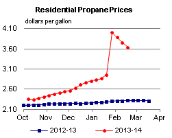
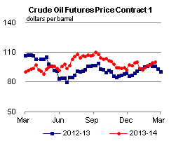

Released: February 20, 2014
Next Release: February 26, 2014
Revised February 24, 2014: Text added to include an explanation of refinery turnaround.
Gasoline inventories generally high as spring refinery turnarounds approach
Since it became the prompt contract at the close of trading on January 31, the Nymex futures contract for March delivery of RBOB (the petroleum component of gasoline) in New York Harbor has increased 19 cents per gallon (cpg), reaching $2.82/gal on February 19 (Figure 1). Despite the recent price rise, the gasoline market remains well-supplied as spring refinery turnarounds approach. A refinery turnaround is a planned shutdown of one or more refinery units for maintenance and repair operations. Refinery turnarounds are typically scheduled during off-peak periods of gasoline and diesel demand, before or after the heating and driving seasons, in the fall and the early spring.
{kind=link}
Inventory trends are a handy measure to roughly gauge supply/demand dynamics in a given market. One explanation for the recent price rise is that gasoline inventories have fallen in recent weeks at a time when they typically build. After reaching 235.3 million barrels (bbl) on January 17, total U.S. gasoline inventories fell 2.2 million bbl to 233.1 million bbl on February 7; typically over this period, inventories build 3.8 million bbl (Figure 2).
However, despite small fluctuations, inventories remain above five-year average levels and modestly above levels at this time of year during the past two years. Gasoline inventories typically build gradually from early November and peak in early February. This year, inventories rose over a shorter period, but the builds were very pronounced. A period of particularly strong builds occurred from mid-December to mid-January when gasoline inventories increased 15.4 million bbl, 4.6 million bbl (43%) more than typical over this period. At their January 17 peak, total U.S. gasoline inventories were 8.2 million bbl above the five-year average, so even after recent draws inventories still stood 2.7 million bbl above the five-year average on February 14. Inventories can provide a key source of supply during refinery turnaround season, which typically runs from roughly January to April, but can vary regionally.
{kind=link}
High refinery runs have helped keep inventories above their five-year average for every week since March 2013. For the four weeks ending February 14, gross inputs into U.S. refineries averaged 15.5 million bbl/d, 1.0 million bbl/d more than the five-year average, and about 0.9 million bbl/d more than last year at this time. With refinery runs high, gasoline production has been rising. During the first 11 months of 2013, gasoline production averaged 7.8 million bbl/d, 230,000 bbl/d more than the five-year average. Most of this incremental production has been on the Gulf Coast, where strong margins and a modestly lighter crude slate, which includes increasing amounts of Eagle Ford and Permian Basin crude, have helped increase gasoline supplies. With refinery inputs continuing to exceed typical levels in EIA's recent weekly data, it is likely gasoline production has remained high in the first months of 2014. However, not all regions have seen gasoline production grow. Production at East Coast refineries was 100,000 bbl/d below the five-year average through November 2013 because of reduced refining capacity. As of January 1, 2013 (the most recent date for which refinery capacity is available), operating refinery capacity on the East Coast was 400,000 bbl/d lower than it was at the start of 2008.
Gasoline inventories are high in most Petroleum Administration for Defense Districts (PADDs), with the exception of PADD 2 (Midwest) where inventories are below the five-year average level, and PADD 4 (Rocky Mountains) where inventories are in the lower half of the five-year range. Midwest gasoline inventories were 0.7 million bbl above the five-year average level on January 10, dropped to 1.8 million below on January 31, and built during past two weeks but are still 1.3 million bbl below the average level. Midwest refiners were hit hard by cold weather in mid-January, leading to brief periods of reduced refinery runs, according to trade press reports. PADD 2 gross refinery inputs fell from 3.6 million bbl/d during the final full week of December to 3.3 million bbl/d for the week ending January 17, before rebounding above late-December levels in recent weeks.
With refinery turnaround season approaching, EIA projects that reduced gasoline production will lead to additional inventory draws. However, inventories are expected to remain above five-year average levels. In the February Short-Term Energy Outlook (STEO), EIA projects total U.S. gasoline inventories to fall from current levels of 233.1 million bbl to 215.2 million bbl in May, which would still be about 3.7 million bbl above typical levels. As a result of tightening supplies, STEO projects the U.S. average retail price for regular gasoline to increase to an average of $3.59/gal in June, up from $3.38/gal on February 17. EIA projects significant regional variation in peak retail prices, with the highest prices expected on the West Coast at a June average of $3.88 /gal, and the lowest prices expected on the Gulf Coast at $3.42/gal.
Gasoline and diesel fuel prices increase again
The U.S. average retail price of regular gasoline increased seven cents to $3.38 per gallon as of February 17, 2014, 37 cents lower than last year at this time. Prices increased in all regions of the nation, with the Rocky Mountain price increasing the most to $3.24 per gallon, 10 cents higher than last week. The Gulf Coast price gained nine cents to $3.18 per gallon and the Midwest price was up eight cents to $3.36 per gallon. The East and West Coast prices increased six cents, to $3.41 per gallon and $3.57 per gallon, respectively.
The national average diesel fuel price was up one cent to $3.99 per gallon, 17 cents lower than last year at this time. Prices increased in all regions of the nation except the Gulf Coast, where the price dropped a penny to $3.78 per gallon. The largest increase was in the Rocky Mountains, where the price gained four cents to $3.91 per gallon. The Midwest price was $3.99 per gallon, up two cents from last week, and the East Coast price increased a penny to $4.13 per gallon. The West Coast price was up less than one cent to remain at $4.00 per gallon.
Propane inventories fall
U.S. propane stocks fell by 1.2 million barrels to end at 26.7 million barrels last week, 24.4 million barrels (47.7%) lower than a year ago. Gulf Coast inventories decreased by 0.5 million barrels, and East Coast inventories dropped by 0.4 million barrels. Rocky Mountain/West Coast inventories decreased by 0.2 million barrels, and Midwest inventories fell by 0.1 million barrels. Propylene non-fuel-use inventories represented 13.1% of total propane inventories
Residential heating oil and propane price decrease
Residential heating oil prices decreased almost 2 cents per gallon to nearly $4.23 per gallon during the period ending February 17, 2014. This is 5 cents per gallon higher than last year's price at this time. Wholesale heating oil prices fell by over 4 cents per gallon last week to almost $3.40 per gallon.
The average residential propane price decreased by less than 13 cents per gallon last week to nearly $3.64 per gallon, $1.32 per gallon higher than the same period last year. Wholesale propane prices decreased 43 cents per gallon to a price just shy of $2.18 per gallon as of February 17, 2014.
Text from the previous editions of This Week In Petroleum is accessible through a link at the top right-hand corner of this page.
|  | |||||||
| Retail Data | Change From Last | Retail Data | Change From Last | ||||
| 02/17/14 | Week | Year | 02/17/14 | Week | Year | ||
| Gasoline | 3.380 | Heating Oil | 4.226 | ||||
| Diesel Fuel | 3.989 | Propane | 3.637 | ||||
|  | |||||||||||||||||||||||||||
|
|||||||||||||||||||||||||||
| *Note: Crude Oil Price in Dollars per Barrel. | |||||||||||||||||||||||||||
| Stocks Data | Change From Last | Stocks Data | Change From Last | ||||
| 02/14/14 | Week | Year | 02/14/14 | Week | Year | ||
| Crude Oil | 362.3 | Distillate | 112.7 | ||||
| Gasoline | 233.4 | Propane | 26.715 | ||||